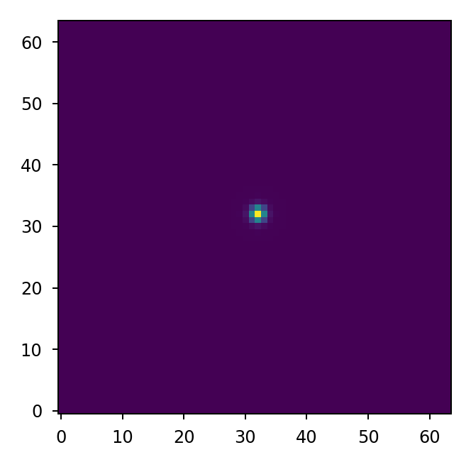

Performing Radiometrically Correct Propagations#
We’ll define a simple pupil, detector, and source object that returns at-aperture
irradiance in terms of photons/s/m^2. Note we must normalize the amplitude array
using normalize_power() to ensure the source flux is preserved
through the diffraction propagation.
>>> import numpy as np
>>> import matplotlib.pyplot as plt
>>> import lentil
>>> amp = lentil.circle((256, 256), 120)
>>> amp = lentil.normalize_power(amp)
>>> pupil = lentil.Pupil(focal_length=10, pixelscale=1/240, amplitude=amp)
>>> source = lentil.radiometry.Spectrum(wave=np.arange(350,701),
... value=1e4*np.ones(351),
... waveunit='nm', valueunit='photlam')
Now we can perform the propagation. Note we must provide wavelength in terms of meters and multiply the source irradiance by the collecting area to get photons/second.
>>> pupil_diameter = 1
>>> psf = np.zeros((64, 64))
>>> for wl, wt in zip(source.wave, source.value):
... w = lentil.Wavefront(wl*1e-9)
... w *= pupil
... w = w.propagate_image(pixelscale=5e-6, npix=32, oversample=2)
... psf += (w.intensity * (np.pi*(pupil_diameter/2)**2))
>>> plt.imshow(psf, origin='lower')
>>> print('Source flux: ', np.floor(np.sum(psf)), 'photons/second')
Source flux: 2730045.0 photons/second
We can significantly increase the performance of the propagation by pre-binning the source flux. This preserves the integrated power of the source, but will wash out any fine features present in the source’s spectral response.
>>> binned_wave = np.arange(350, 701, 50)
>>> binned_flux = source.bin(binned_wave)
>>> psf = np.zeros((64, 64))
>>> for wl, wt in zip(binned_wave, binned_flux):
... w = lentil.Wavefront(wl*1e-9)
... w *= pupil
... w = w.propagate_image(pixelscale=5e-6, npix=32, oversample=2)
... psf += (w.intensity * (np.pi*(pupil_diameter/2)**2))
>>> plt.imshow(psf, origin='lower')

>>> print('Source flux: ', np.floor(np.sum(psf)), 'photons/second')
Source flux: 2722236.0 photons/second
The resulting images and total flux are very nearly the same, but the binned propagation runs 50 times faster.
import numpy as np
import lentil
class Model:
# We assume we have already defined a pupil, detector, and source object and
# that the source object returns at-aperture irradiance
pupil = Pupil()
detector = Detector()
source = Source()
planes = [pupil, detector]
def propagate(self, npix=None, oversample=2, rebin=True, tilt='phase',
npix_chip=None, wave_sampling=25e-9, flux_trim_tol=1e-2):
bandpass = self.pupil.transmission
bandpass.trim(flux_trim_tol)
if wave_sampling:
start = bandpass.wave[0]
stop = bandpass.wave[-1]
num = int(np.round((stop-start)/wave_sampling*1e9)))
wave = np.linspace(start, stop, num)
trans = bandpass.sample(wave)
else:
wave = bandpass.wave
trans = bandpass.value
return lentil.propagate(self.planes, wave*1e-9, trans, npix, npix_chip,
oversample, rebin, tilt, flatten=True)
If we would like to render an image as read out by the detector, we add light_flux and image methods to the Model class:
import numpy as np
import lentil
class Model:
...
def light_flux(self, flux, qe=1):
flux.to('photlam')
flux *= self.pupil.transmission
flux *= qe # flux is now in e-/s
return flux
def image(self, ts, npix=None, window=None, nframes=1, oversample=2,
tilt='phase', npix_chip=None, pixelate=True, warn_saturate=False,
wave_sampling=25e-9, flux_trim_tol=1e-2):
flux = self.light_flux(self.source, qe=self.detector.qe)
flux.trim(flux_trim_tol)
if wave_sampling:
start = flux.wave[0]
stop = flux.wave[-1]
num = int(np.round((stop-start)/(wave_sampling*1e9)))
wave = np.linspace(start, stop, num)
else:
wave = flux.wave
binned_flux = flux.bin(wave, waveunit=flux.waveunit)
# do the propagation
img = lentil.propagate(self.planes,
wave=wave * 1e-9,
weight=binned_flux,
npix=npix,
oversample=oversample,
rebin=False,
tilt=tilt,
npix_chip=npix_chip,
flatten=True)
frame = np.empty((nframes, img.shape[0]//oversample, img.shape[1]//oversample))
for f in np.arange(nframes):
frame[f] = self.detector.frame(flux=img,
ts=ts,
wave=None,
waveunit=None,
oversample=oversample,
pixelate=pixelate,
collect_charge=False,
window=window,
warn_saturate=warn_saturate)
if nframes == 1:
frame = frame[0, :, :]
return frame